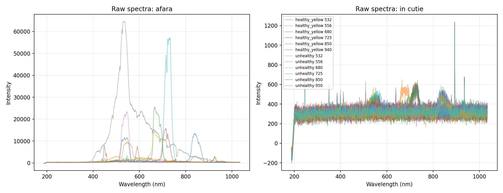
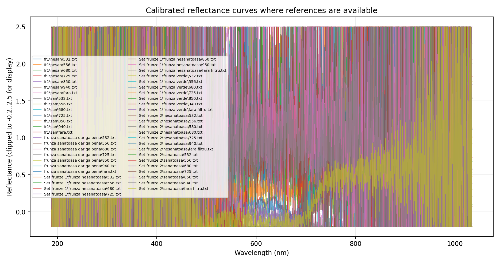
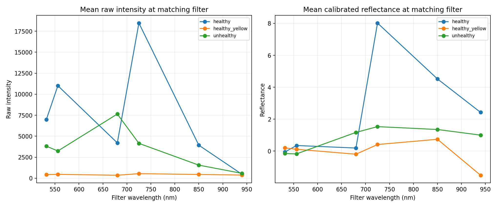
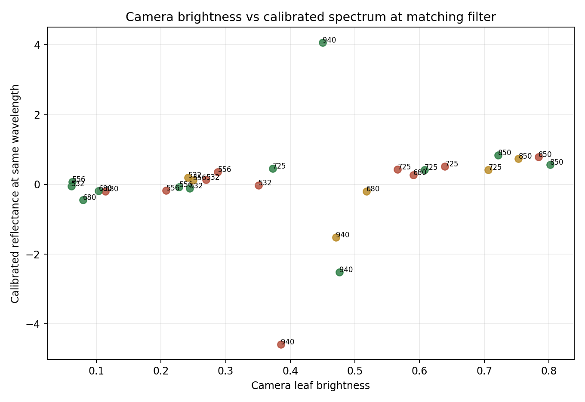
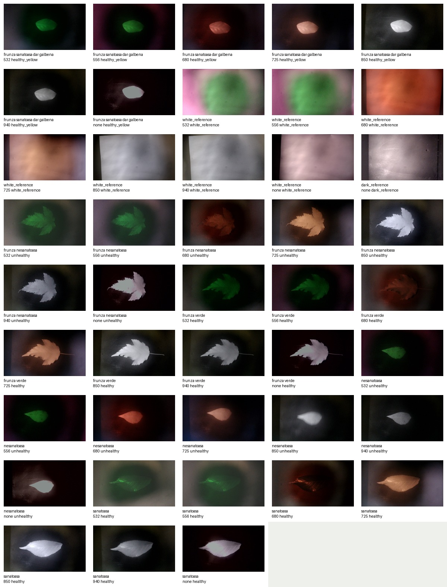

Spectral Graphs


Feature Comparison


Camera Measurements

Now using exported TXT spectra with 2048 wavelength-intensity points, camera JPGs, and white/dark reference calibration where available.




